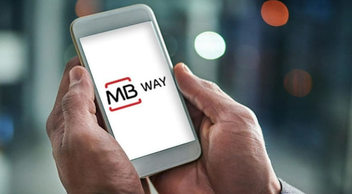

MB WAY é a solução MULTIBANCO para fazer compras online e em loja, criar cartões MBNET, utilizar Caixas MULTIBANCO, enviar dinheiro e dividir contas com os seus amigos. Em breve vai ser possível usar este fantástico serviço em Espanha e Itália.
 A SIBS (MB WAY, Portugal), o BANCOMAT (Itália) e a BIZUM (Espanha), empresas de serviços de pagamentos
móveis
líderes nos seus países, assinaram uma Carta de Intenções para implementar a interoperabilidade entre elas.
Este
acordo pretende permitir que os utilizadores façam pagamentos instantâneos simples, convenientes e seguros
utilizando o seu telemóvel entre os três países.
O objetivo deste acordo é interligar as três principais soluções de pagamentos em que os utilizadores
confiam em
cada um destes países, deixando a porta aberta ao envolvimento de outras soluções de pagamento europeias em
fases posteriores desta iniciativa.
O MB WAY, o BANCOMAT Pay® e a BIZUM disponibilizam pagamentos Person-to-Person (P2P) e Person-to-Business
(P2B).
Estas três soluções são já utilizadas por 42,7 milhões de pessoas, que efetuaram 1,47 mil milhões de
pagamentos
em 2023, nos três países.
Com o objetivo de desenvolver a interoperabilidade P2P em 2024, este acordo define os princípios de
cooperação
entre o MB WAY, o BANCOMAT Pay® e a BIZUM como um primeiro passo a ser seguido por outros métodos de
pagamento
no futuro.